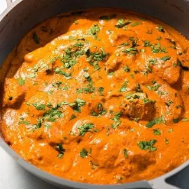

Butter Chicken

Butter chicken, or murgh makhani, is a mild, creamy Indian curry originating from Delhi in the 1950s, invented
by chefs Kundan Lal Gujral and Kundan Lal Jaggi at the Moti Mahal restaurant. It was created to repurpose
leftover tandoori chicken by simmering it in a rich, smooth gravy made primarily of tomatoes, butter, and cream.
Ingredients
- Boneless, skinless chicken thighs
- plain yogurt
- lemon juice
- kasuri methi
- coriander
- heavy cream
Steps
-
Marinate the chicken by tossing bite-sized pieces with yogurt, lemon juice, ginger, garlic, and spices (such
as garam masala, cumin, and turmeric); let it rest in the refrigerator for at least 30 minutes or overnight
for maximum tenderness.
-
Cook the chicken by searing the marinated pieces in a hot skillet with oil or ghee until browned on all
sides, then remove the chicken from the pan and set it aside
-
Add aSauté the aromatics in the same skillet by melting butter and cooking diced onions until golden, then
adding minced garlic and ginger until fragrant.
top crust or crumb topping, trim edges, and crimp or seal the dough.
-
Build the sauce by stirring in tomato puree or crushed tomatoes along with spices like chili powder and
coriander, simmering the mixture until it thickens and the raw tomato flavor cooks out.
-
Combine and serve by returning the cooked chicken to the skillet, stirring in heavy cream and a touch of
sugar, and simmering gently for a few minutes until the chicken is heated through and the sauce is creamy.
Home